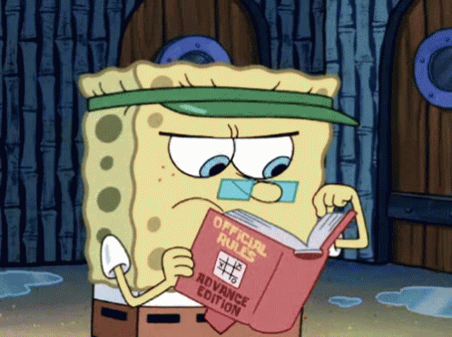

Para iniciar el juego, todos los participantes deberán trazar en una hoja una tabla , y en la primera fila escribirán las diferentes categorías acordadas por los participantes. Después de las categorías deberá ir el total, donde se colocará la puntuación. Si la palabra esta mal escrita no cuenta el punto. El juego consiste de rondas en las que se escoge solo una letra del abecedario. Una ronda finaliza cuando un jugador grita el nombre del juego o una frase como «alto el pato», «bachillerato stop» o «basta para mí, basta para todos», generalmente se grita cuando el jugador ya ha terminado de llenar todas las casillas de esa fila, dando así por finalizada esa misma ronda, no obstante, también pueden gritar aunque no hayan terminado de llenar la fila y las casillas vacías quedaran anuladas para el participante. En ese momento, todos los participantes deberán dejar de escribir, y si alguna palabra hubiera quedado incompleta ya no se completará ni se contará como válida. Entre algunas de sus variaciones, existe la forma en que la duración de una ronda tendrá un tiempo preestablecido medido por un reloj.
